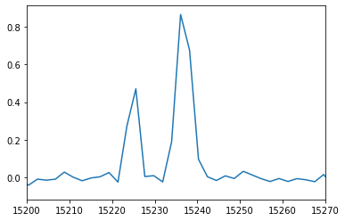
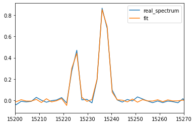

Modelling and fitting a spectrum with two resolved lines¶
Based on what we have seen in the example Modelling and fitting one emission line we will model and fit a spectrum with two resolved lines. This example will then be used in Modelling and fitting two unresolved emission lines with a Bayesian approach
[1]:
import orb.fit
import pylab as pl
import numpy as np
from orb.core import Lines
Second step: modelling and fitting a spectrum with two resolved lines¶
No particular difficulty here. A classical algorithm is good enough.
[2]:
halpha_cm1 = Lines().get_line_cm1('Halpha')
step = 2943
order = 8
step_nb = 840
axis_corr = 1.0374712062298759
theta = orb.utils.spectrum.corr2theta(axis_corr)
print('incident angle theta (in degrees):', theta)
zpd_index = 168
# model spectrum
velocity1 = 250
broadening1 = 15
spectrum_axis, spectrum1 = orb.fit.create_cm1_lines_model_raw([halpha_cm1], [1], step, order, step_nb, axis_corr, zpd_index=zpd_index, fmodel='sincgauss',
sigma=broadening1, vel=velocity1)
velocity2 = 10
broadening2 = 30
spectrum_axis, spectrum2 = orb.fit.create_cm1_lines_model_raw([halpha_cm1], [1], step, order, step_nb, axis_corr, zpd_index=zpd_index, fmodel='sincgauss',
sigma=broadening2, vel=velocity2)
spectrum = spectrum1 + spectrum2
# add noise
spectrum += np.random.standard_normal(spectrum.shape) * 0.02
spectrum_axis = orb.utils.spectrum.create_cm1_axis(np.size(spectrum), step, order, corr=axis_corr)
pl.plot(spectrum_axis, spectrum)
pl.xlim((15200, 15270))
incident angle theta (in degrees): 15.445939567249903
[2]:
(15200, 15270)

[3]:
nm_laser = 543.5 # wavelength of the calibration laser, in fact it can be any real positive number (e.g. 1 is ok)
# pos_def must be given here because, by default all the lines are considered
# to share the same velocity. i.e. sigma_def = ['1', '1']. As the two lines do not have
# the same velocity we put them in two different velocity groups: sigma_def = ['1', '2']
#
# pos_cov is the velocity of the lines in km/s. It is a covarying parameter,
# because the reference position -i.e. the initial guess- of the lines is set
#
# sigma_guess is the initial guess on the broadening (in km/s)
fit = orb.fit.fit_lines_in_spectrum(spectrum, [halpha_cm1, halpha_cm1], step, order, nm_laser, theta, zpd_index,
wavenumber=True, apodization=1, fmodel='sincgauss',
pos_def=['1', '2'],
pos_cov=[velocity1, velocity2],
sigma_guess=[broadening1, broadening2])
print('velocity (in km/s): ', fit['velocity_gvar'])
print('broadening (in km/s): ', fit['broadening_gvar'])
print('flux (in the unit of the spectrum amplitude / unit of the axis fwhm): ', fit['flux_gvar'])
pl.plot(spectrum_axis, spectrum, label='real_spectrum')
pl.plot(spectrum_axis, fit['fitted_vector'], label='fit')
pl.xlim((15200, 15270))
pl.legend()
velocity (in km/s): [244.5(1.4) 10.51(86)]
broadening (in km/s): [20.7(2.2) 31.33(98)]
flux (in the unit of the spectrum amplitude / unit of the axis fwhm): [0.673(40) 1.663(51)]
[3]:
<matplotlib.legend.Legend at 0x7f93b44b7310>
